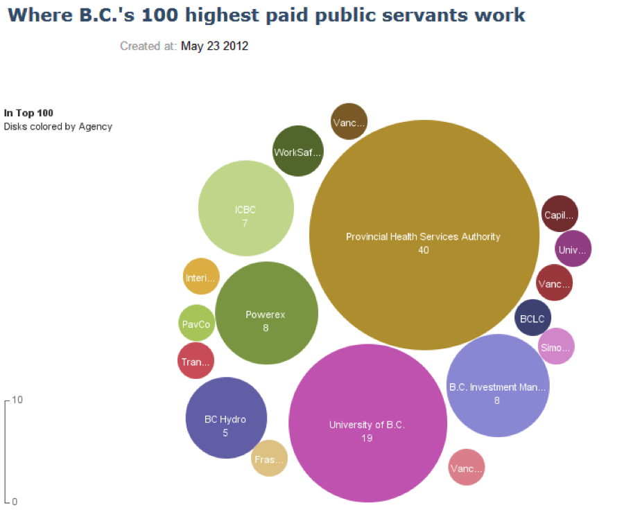
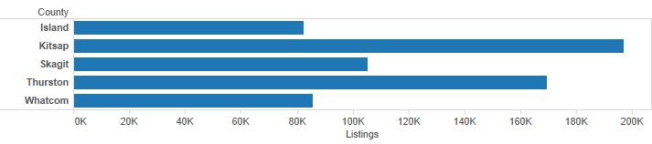
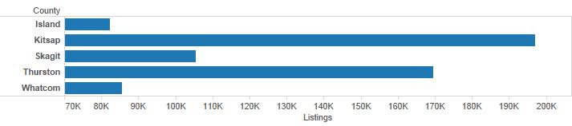
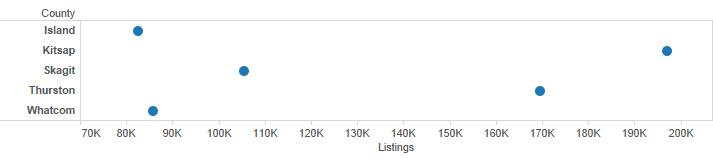

Due: Quiz 3
Blackboard --> This course --> Quizzes --> Quiz3
Lecture Notes
Reminders
Quiz 3 is due this unit. I encourage you to look ahead to the next unit as soon as possible. Your first "real" visualization assignment is due at the end of the next unit -- if you are struggling, you'll probably want to get started early.
Design Guidelines
Let's look at one of the visual encodings described in Iliinsky's table -- size, area. He has it listed as "Good" for quantitative values. If we compare this to Few's use of "points of varying size," we can see that Few only recommends this for geospatial data, specifically to pinpoint specific locations for entire regions. Part of this difference is due to the two people using different classification systems for visual encodings. "Size, area" is a very broad concept and you might think that there is some overlap between that category and Few's categories of "Horizontal and Vertical Bars/Boxes." For horizontal and vertical bars, it is really the length that allows us to make the comparison so the "size, area" category doesn't really overlap here. Horizontal and vertical box plots do have a slight area component to them but, once again, most of the preattentive processing is accomplished by the length and the line markers on the box plots.
A common example of using size to encode quantitative information is the bubble chart (shown below). 
The chart shows what agencies the top 100 public servants in British Columbia worked in 2012. Size represents the count of public servants at that particular agency. I don't think Iliinsky would be particular fond of this chart. Stephen Few expresses his displeasure with it in a blog post. There probably is a nuanced difference between Few and Iliinsky on the applicability of bubble charts to static graphs which further illustrates the point that the visual encoding guidelines provided by both authors are suggestions, not law. In one of the videos we watched last week, Hans Rosling used bubble charts effectively. This was a dynamic presentation, however, and once you start animating things you are introducing at least one new encoding -- motion. I've intentionally exposed you to different guidelines so you can get some experience at looking at encodings from different perspectives.
In these notes, I'm only going to give one example of visual encoding recommendations using the "Summary at a Glance" section at the end of Few, Chapter 6. In the video, I'll cover several more. I'll be using the example Tableau Library "Finance" to illustrate.
Nominal Comparison Few makes an important point. For nominal comparisons, you should only use points when the quantitative scale does not begin at zero. In general, you should have good reason to not have a zero start point as this can lead to a misleading graph. If we want to compare home sales for select Puget Sound counties, county is nominal (technically it is also geographic but we aren't mapping right now). Few recommends to ideally use bars (horizontal or vertical) as shown below. We use the length of the bars to make comparisons. Kitsap county looks like it had about 2.4 times as many listings as Island county because the bar is roughly 2.4 times longer. 
Let's assume that for some reason, my quantitative scale doesn't begin with zero (note: you should be extremely suspicious when you see this). The chart below becomes exceptionally misleading because now it appears as though Kitsap county has over 10 times the listings of Island county. 
You should really never let this happen. If for some reason you are forced into using a non-zero start point (this happens sometimes in journalism), then you should use something that doesn't force our brain into making comparisons via length or area. Few recommends a dot plot as shown below. The first bar chart is still the best option in this case. 
For the remainder of the comparisons, watch the video Unit 4_2. I also encourage you to go over the entire "Practice in Selecting Tables and Graphs" section in your book.
Tableau Tutorial
In the video tutorial this week, we'll be importing data for the first time. It is fairly straightforward. I'm also going to give a very brief introduction to OpenRefine. Note that after you launch OpenRefine, you point your browser to http://127.0.0.1:3333 to access the user interface.